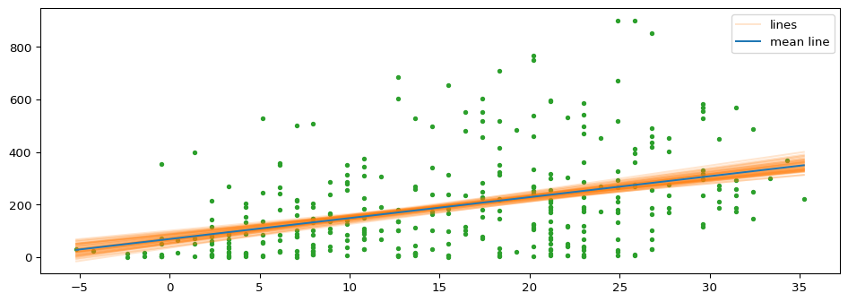
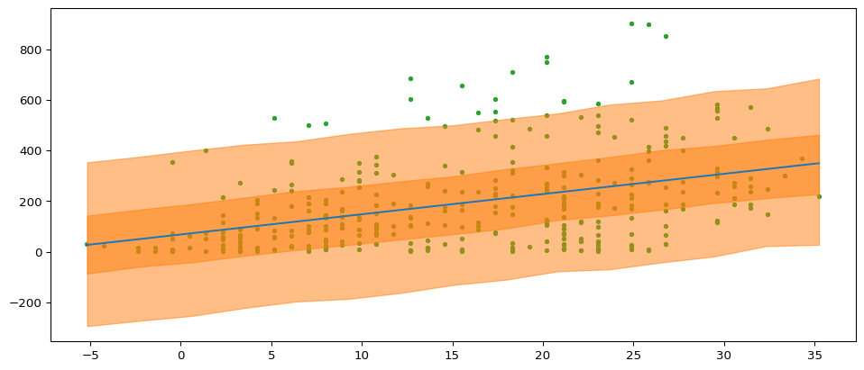
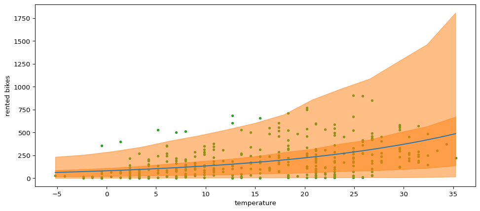
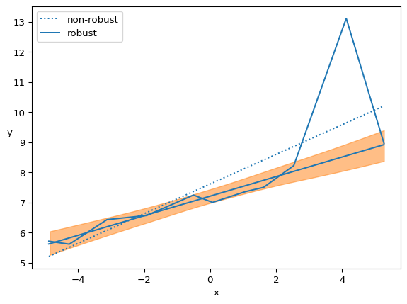
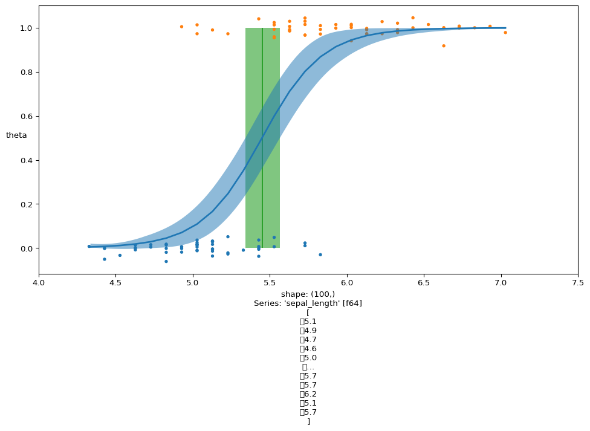
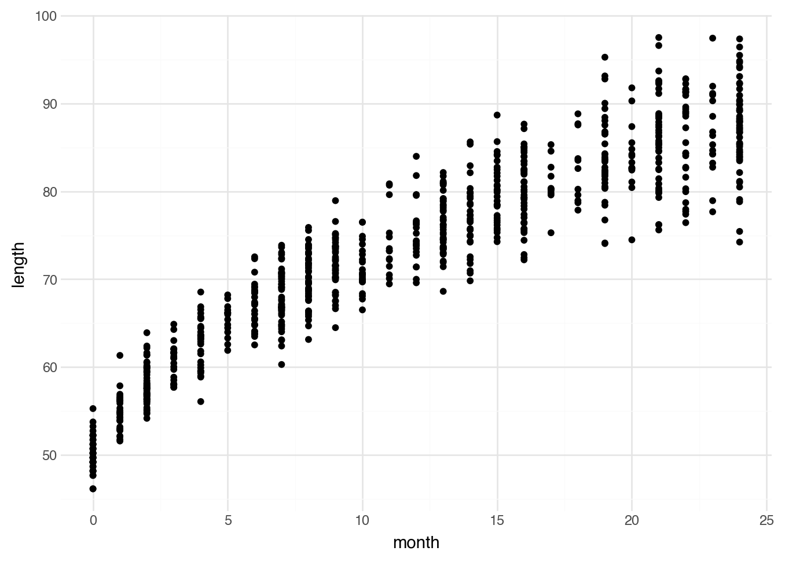
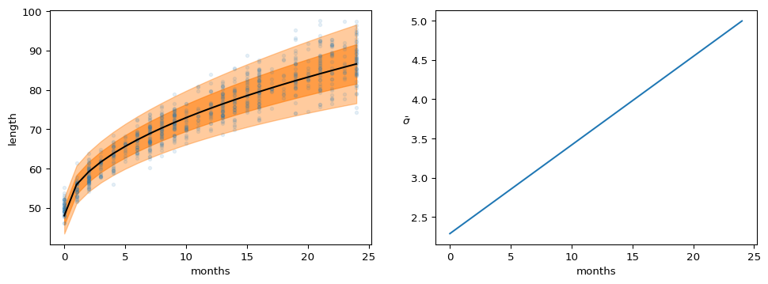

Code
import arviz as az
import matplotlib.pyplot as plt
import xarray as xr
import numpy as np
import polars as pl
import polars.selectors as cs
import preliz as pz
import pymc as pm
from scipy.interpolate import PchipInterpolatorimport arviz as az
import matplotlib.pyplot as plt
import xarray as xr
import numpy as np
import polars as pl
import polars.selectors as cs
import preliz as pz
import pymc as pm
from scipy.interpolate import PchipInterpolatorFor the most part we have really just been working in simple simple land. We have only been passing off models that look a bit like
\[ Y = \beta_1 \times var + \varepsilon \]
Some more astute users or just casual viewers may have noticed that we are not specifying a model with an intercept. Which is fine for some things probably not ideal for others! So the big thing about this chapter for me is really just building a simple model with more moving parts into the likelihood and then getting real funky with the likelihood.
bikes = pl.read_csv('https://raw.githubusercontent.com/aloctavodia/BAP3/refs/heads/main/code/data/bikes.csv')So the model is going to look pretty similar just with a little bit of a remix. So \(\sigma\) looks the same, for the most part, while the mu changes a bit because you have to tell PyMC what is being multiplied to get the mean of the whatever. So if we are specifying a model of bike rentals with temperature as one of our predictors as in the book. The model would look like this when we write it out mathily.
\[ \begin{aligned} \alpha \sim Normal(0, 100) \\ \beta \sim Normal(0, 100) \\ \sigma \sim Half Cauchy(10) \\ y \sim Normal(mu, sigma) \end{aligned} \]
In PyMC there is one additional step to get the correct mu,
with pm.Model() as model_ols:
alpha = pm.Normal('alpha', 0, 100)
beta = pm.Normal('beta', 0, 100)
sigma = pm.HalfCauchy('sigma', 10)
mu = pm.Deterministic('mu', alpha + beta * bikes['temperature'].to_numpy())
y = pm.Normal('y', mu = mu, sigma = sigma, observed=bikes['rented'].to_numpy())
out_ols = pm.sample(nuts_sampler='nutpie')Sampler Progress
Total Chains: 4
Active Chains: 0
Finished Chains: 4
Sampling for now
Estimated Time to Completion: now
| Progress | Draws | Divergences | Step Size | Gradients/Draw |
|---|---|---|---|---|
| 2000 | 0 | 0.70 | 15 | |
| 2000 | 0 | 0.78 | 7 | |
| 2000 | 0 | 0.72 | 3 | |
| 2000 | 0 | 0.76 | 7 |
One of the strongest points of Bayesian statistics is that we can convey our uncertainty in way that is really plottable! However, this requires working with the posterior. So we can extract the posterior like this.
posterior = az.extract(out_ols, num_samples=50)
plot = xr.DataArray(
np.linspace(bikes['temperature'].min(), bikes['temperature'].max(), 50) , dims = 'plot_id'
)
mean_lines = posterior['alpha'].mean() + posterior['beta'].mean() * plot
lines = posterior['alpha'] + posterior['beta'] * plot
hdi = az.hdi(out_ols.posterior['mu'])
fig, axes = plt.subplots(figsize = (12,4))
axes.plot(bikes['temperature'], bikes['rented'],'C2.' ,zorder=-3)
lines_ = axes.plot(plot, lines.T, c = 'C1', alpha = 0.2, label = 'lines')
axes.plot(plot, mean_lines, c = 'C0', label = 'mean line')
plt.setp(lines_[1:], label = "_")
axes.legend()
These look pretty nice! for the most part the model makes very similar regression lines, which is generally a good sign.
In general when put in front of decision maker we should be able to express what our model thinks about the future. Another important thing is that looking at what our model thinks about the future is a pretty good built in check. If it predicts things that cannot happen than it is a pretty good sign that we may need to rething our model.
pm.sample_posterior_predictive(out_ols, model = model_ols, extend_inferencedata=True)
mean_line = out_ols.posterior['mu'].mean(('chain', 'draw'))
temperature = np.random.normal(bikes['temperature'], 0.01)
idx = np.argsort(temperature)
x = np.linspace(temperature.min(), temperature.max(), 15)
y_prds = out_ols.posterior_predictive['y'].quantile(
[0.03, 0.97, 0.25, 0.75], dim=["chain", "draw"]
)
y_hat_bound = iter(
[
PchipInterpolator(temperature[idx], y_prds[i][idx])(x)
for i in range(4)
]
)
_, ax = plt.subplots(figsize=(12,5))
ax.plot(bikes['temperature'], bikes['rented'], "C2.", zorder = -3)
ax.plot(bikes['temperature'][idx], mean_line[idx], c = 'C0')
for lb, ub in zip(y_hat_bound, y_hat_bound):
ax.fill_between(x, lb, ub, color="C1", alpha=0.5)Sampling: [y]
So in the prior section we saw that we are getting negative bike rentals. Which does not make any sense. Obviously we cannot have a negative number for a count. So we are going to use a count model. We could use a fish regression or a negative binomial. One really important thing about the PyMC universe is that a bit like Stan we do have to do some extra stuff to make sure the model knows what it is doing. So lets go ahead and show this.
with pm.Model() as neg_model_wrong:
alpha = pm.Normal('alpha', mu = 0, sigma = 1)
beta = pm.Normal('beta', mu = 0, sigma = 10)
sigma = pm.HalfNormal('sigma', 10)
mu = pm.Deterministic('mu', alpha + beta * bikes['temperature'].to_numpy())
y = pm.NegativeBinomial('y', mu = mu, alpha = alpha, observed = bikes['rented'].to_numpy())
neg_wrong_out = pm.sample()
neg_wrong_out.extend(pm.sample_posterior_predictive(neg_wrong_out))
neg_model_wrong.debug()Initializing NUTS using jitter+adapt_diag...--------------------------------------------------------------------------- SamplingError Traceback (most recent call last) Cell In[6], line 7 5 mu = pm.Deterministic('mu', alpha + beta * bikes['temperature'].to_numpy()) 6 y = pm.NegativeBinomial('y', mu = mu, alpha = alpha, observed = bikes['rented'].to_numpy()) ----> 7 neg_wrong_out = pm.sample() 8 neg_wrong_out.extend(pm.sample_posterior_predictive(neg_wrong_out)) 10 neg_model_wrong.debug() File ~/Library/CloudStorage/Dropbox/learning-bayes/bayesian-analysis-with-python/.venv/lib/python3.13/site-packages/pymc/sampling/mcmc.py:825, in sample(draws, tune, chains, cores, random_seed, progressbar, progressbar_theme, step, var_names, nuts_sampler, initvals, init, jitter_max_retries, n_init, trace, discard_tuned_samples, compute_convergence_checks, keep_warning_stat, return_inferencedata, idata_kwargs, nuts_sampler_kwargs, callback, mp_ctx, blas_cores, model, compile_kwargs, **kwargs) 823 [kwargs.setdefault(k, v) for k, v in nuts_kwargs.items()] 824 with joined_blas_limiter(): --> 825 initial_points, step = init_nuts( 826 init=init, 827 chains=chains, 828 n_init=n_init, 829 model=model, 830 random_seed=random_seed_list, 831 progressbar=progress_bool, 832 jitter_max_retries=jitter_max_retries, 833 tune=tune, 834 initvals=initvals, 835 compile_kwargs=compile_kwargs, 836 **kwargs, 837 ) 838 else: 839 # Get initial points 840 ipfns = make_initial_point_fns_per_chain( 841 model=model, 842 overrides=initvals, 843 jitter_rvs=set(), 844 chains=chains, 845 ) File ~/Library/CloudStorage/Dropbox/learning-bayes/bayesian-analysis-with-python/.venv/lib/python3.13/site-packages/pymc/sampling/mcmc.py:1598, in init_nuts(init, chains, n_init, model, random_seed, progressbar, jitter_max_retries, tune, initvals, compile_kwargs, **kwargs) 1595 q, _ = DictToArrayBijection.map(ip) 1596 return logp_dlogp_func([q], extra_vars={})[0] -> 1598 initial_points = _init_jitter( 1599 model, 1600 initvals, 1601 seeds=random_seed_list, 1602 jitter="jitter" in init, 1603 jitter_max_retries=jitter_max_retries, 1604 logp_fn=model_logp_fn, 1605 ) 1607 apoints = [DictToArrayBijection.map(point) for point in initial_points] 1608 apoints_data = [apoint.data for apoint in apoints] File ~/Library/CloudStorage/Dropbox/learning-bayes/bayesian-analysis-with-python/.venv/lib/python3.13/site-packages/pymc/sampling/mcmc.py:1479, in _init_jitter(model, initvals, seeds, jitter, jitter_max_retries, logp_fn) 1476 if not np.isfinite(point_logp): 1477 if i == jitter_max_retries: 1478 # Print informative message on last attempted point -> 1479 model.check_start_vals(point) 1480 # Retry with a new seed 1481 seed = rng.integers(2**30, dtype=np.int64) File ~/Library/CloudStorage/Dropbox/learning-bayes/bayesian-analysis-with-python/.venv/lib/python3.13/site-packages/pymc/model/core.py:1761, in Model.check_start_vals(self, start, **kwargs) 1758 initial_eval = self.point_logps(point=elem, **kwargs) 1760 if not all(np.isfinite(v) for v in initial_eval.values()): -> 1761 raise SamplingError( 1762 "Initial evaluation of model at starting point failed!\n" 1763 f"Starting values:\n{elem}\n\n" 1764 f"Logp initial evaluation results:\n{initial_eval}\n" 1765 "You can call `model.debug()` for more details." 1766 ) SamplingError: Initial evaluation of model at starting point failed! Starting values: {'alpha': array(-0.38690733), 'beta': array(-0.74528227), 'sigma_log__': array(2.16074549)} Logp initial evaluation results: {'alpha': np.float64(-0.99), 'beta': np.float64(-3.22), 'sigma': np.float64(-0.74), 'y': np.float64(-inf)} You can call `model.debug()` for more details.
It looks like the model will actually get supermad and not let you do that. Which is good lol it is probably good that there are some built in checks with the software as well as the fact that the NUTS sampler is probably having a hard time exploring the posterior distribution.
with pm.Model() as neg_model_good:
alpha = pm.Normal('alpha', mu = 0, sigma = 1)
beta = pm.Normal('beta', mu = 0, sigma = 10)
sigma = pm.HalfNormal('sigma', 10)
mu = pm.Deterministic('mu', pm.math.exp(alpha + beta * bikes['temperature'].to_numpy()))
y = pm.NegativeBinomial('y', mu = mu, alpha = sigma, observed = bikes['rented'].to_numpy())
neg_good_out = pm.sample(nuts_sampler='nutpie')
neg_good_out.extend(pm.sample_posterior_predictive(neg_good_out))Sampler Progress
Total Chains: 4
Active Chains: 0
Finished Chains: 4
Sampling for now
Estimated Time to Completion: now
| Progress | Draws | Divergences | Step Size | Gradients/Draw |
|---|---|---|---|---|
| 2000 | 0 | 0.71 | 3 | |
| 2000 | 0 | 0.69 | 7 | |
| 2000 | 0 | 0.71 | 3 | |
| 2000 | 0 | 0.79 | 7 |
Sampling: [y]So when we go and look at the posterior predictive it is going to look like
mean_line = neg_good_out.posterior['mu'].mean(('chain', 'draw'))
temperature = np.random.normal(bikes['temperature'].to_numpy(), 0.01)
idx = np.argsort(temperature)
x = np.linspace(temperature.min(), temperature.max(), 15)
y_pred_q = neg_good_out.posterior_predictive["y"].quantile(
[0.03, 0.97, 0.25, 0.75], dim=["chain", "draw"]
)
y_hat_bounds = iter(
[
PchipInterpolator(temperature[idx], y_pred_q[i][idx])(x)
for i in range(4)
]
)
_, ax = plt.subplots(figsize=(12, 5))
ax.plot(bikes['temperature'], bikes['rented'], "C2.", zorder=-3)
ax.plot(bikes['temperature'][idx], mean_line[idx], c="C0")
for lb, ub in zip(y_hat_bounds, y_hat_bounds):
ax.fill_between(x, lb, ub, color="C1", alpha=0.5)
ax.set_xlabel("temperature")
ax.set_ylabel("rented bikes")Text(0, 0.5, 'rented bikes')
One of the nice things about PyMC is that we can actually start doing stuff to various parameters. So Martin uses the exmaple that he tends to not like the plain old exponential. The reason this is because the unshifted Exponential puts a lot of weight on values close to zero. Which could be fine but that is probably going to be really really data dependent. So we can do that by just passing off things to pm.math. So we could theoretically shift the values our self using pm.math(parameter, paramater +1), but the problem is that once we pass this to the likelihood it is not going to sample the way we want it to.
ans = pl.read_csv('https://raw.githubusercontent.com/aloctavodia/BAP3/refs/heads/main/code/data/anscombe_3.csv')
with pm.Model() as model_t:
alpha = pm.Normal('alpha', mu = ans['y'].mean(), sigma = 1)
beta = pm.Normal('beta', mu = 0, sigma = 1)
sigma = pm.HalfNormal('sigma', 5)
nu = pm.Exponential('nu', 1/29)
nu_shifted = pm.Deterministic('nu_shift', nu + 1)
mu = pm.Deterministic('mu', alpha + beta * ans['x'].to_numpy())
y = pm.StudentT('y', mu = mu, sigma = sigma, nu = nu, observed=ans['y'].to_numpy())
out_model_t = pm.sample(2000, nuts_sampler='nutpie')Sampler Progress
Total Chains: 4
Active Chains: 0
Finished Chains: 4
Sampling for now
Estimated Time to Completion: now
| Progress | Draws | Divergences | Step Size | Gradients/Draw |
|---|---|---|---|---|
| 3000 | 0 | 0.60 | 7 | |
| 3000 | 0 | 0.80 | 7 | |
| 3000 | 0 | 0.72 | 7 | |
| 3000 | 0 | 0.57 | 3 |
So if we look at her compared to the non-robust version
from scipy.stats import linregress
beta_c, alpha_c, *_ = linregress(ans['x'], ans['y'])
_, ax = plt.subplots()
ax.plot(ans['x'], (alpha_c + beta_c * ans['x']), "C0:", label="non-robust")
ax.plot(ans['x'], ans['y'], "C0")
alpha_m = out_model_t.posterior["alpha"].mean(("chain", "draw"))
beta_m = out_model_t.posterior["beta"].mean(("chain", "draw"))
x_plot = xr.DataArray(np.linspace(ans['x'].min(), ans['x'].max(), 50), dims="plot_id")
ax.plot(x_plot, alpha_m + beta_m * x_plot, c="C0", label="robust")
az.plot_hdi(ans['x'], az.hdi(out_model_t.posterior["mu"])["mu"].T, ax=ax)
ax.set_xlabel("x")
ax.set_ylabel("y", rotation=0)
ax.legend(loc=2)/Users/josh/Library/CloudStorage/Dropbox/learning-bayes/bayesian-analysis-with-python/.venv/lib/python3.13/site-packages/arviz/plots/hdiplot.py:166: FutureWarning: hdi currently interprets 2d data as (draw, shape) but this will change in a future release to (chain, draw) for coherence with other functions
hdi_data = hdi(y, hdi_prob=hdi_prob, circular=circular, multimodal=False, **hdi_kwargs)
A Bayesian classifier. So lets see the centering and scaling in action
iris = pl.read_csv('https://raw.githubusercontent.com/aloctavodia/BAP3/refs/heads/main/code/data/iris.csv').filter(pl.col('sepal_length').is_not_nan())
cleanish = iris.filter(pl.col('species').is_in(['setosa', 'versicolor'])).with_columns(
(pl.col('sepal_length')-pl.col('sepal_length').mean()).alias('centered'),
)
y_0 = cleanish['species'].cast(pl.Categorical).to_physical().to_numpy()
x_n = cleanish['sepal_length']
x_c = cleanish['centered'].to_numpy()
x_0 = cleanish['sepal_length']
with pm.Model() as logit:
alpha = pm.Normal('alpha', mu = 0, sigma= 1)
beta = pm.Normal('beta', mu = 0, sigma = 5)
mu = alpha + x_c * beta
theta = pm.Deterministic('theta', pm.math.sigmoid(mu))
bd = pm.Deterministic('bd', -alpha/beta)
yl = pm.Bernoulli('y', p = theta, observed = y_0)
out_logit = pm.sample(nuts_sampler='nutpie')Sampler Progress
Total Chains: 4
Active Chains: 0
Finished Chains: 4
Sampling for now
Estimated Time to Completion: now
| Progress | Draws | Divergences | Step Size | Gradients/Draw |
|---|---|---|---|---|
| 2000 | 0 | 1.04 | 3 | |
| 2000 | 0 | 1.10 | 3 | |
| 2000 | 0 | 1.09 | 3 | |
| 2000 | 0 | 1.06 | 3 |
Now lets see how well this matches the book
posterior = out_logit.posterior
theta = posterior["theta"].mean(("chain", "draw"))
idx = np.argsort(x_c)
_, ax = plt.subplots(figsize=(12, 6))
ax.plot(x_c[idx], theta[idx], color="C0", lw=2)
ax.vlines(posterior["bd"].mean(("chain", "draw")), 0, 1, color="C2", zorder=0)
bd_hdi = az.hdi(posterior["bd"])
ax.fill_betweenx([0, 1], bd_hdi["bd"][0], bd_hdi["bd"][1], color="C2", alpha=0.6, lw=0)
ax.scatter(x_c, np.random.normal(y_0, 0.02), marker=".", color=[f"C{x}" for x in y_0])
az.plot_hdi(x_c, posterior["theta"], color="C0", ax=ax, fill_kwargs={"lw": 0})
ax.set_xlabel(x_n)
ax.set_ylabel("theta", rotation=0)
# # use original scale for xticks
locs, _ = plt.xticks()
ax.set_xticks(locs, np.round(locs + x_0.mean(), 1))/Users/josh/Library/CloudStorage/Dropbox/learning-bayes/bayesian-analysis-with-python/.venv/lib/python3.13/site-packages/IPython/core/events.py:82: UserWarning: Glyph 9 ( ) missing from font(s) DejaVu Sans.
func(*args, **kwargs)
/Users/josh/Library/CloudStorage/Dropbox/learning-bayes/bayesian-analysis-with-python/.venv/lib/python3.13/site-packages/IPython/core/pylabtools.py:170: UserWarning: Glyph 9 ( ) missing from font(s) DejaVu Sans.
fig.canvas.print_figure(bytes_io, **kw)
What happens when we are presented with a good old fashion problem of what happens when we violate one of our many assumptions of OLS how do we fix that? Well in some respects the most straightforward answer is to change how we specify the model. Whether this is moving from a static regression to a time-series model or incorporating group structures. Sometimes making a more complex model is not neccessarily worth it when we can just fix it with a transformation or robust standard errors. If we examine the data from the WHO.
import plotnine as pn
babies_who = pl.read_csv('https://raw.githubusercontent.com/aloctavodia/BAP3/refs/heads/main/code/data/babies.csv')
bb_plt = (pn.ggplot(babies_who, pn.aes(x = 'month', y = 'length')) +
pn.geom_point() +
pn.theme_minimal())
bb_plt
I think for the most part we would be comfortable just fitting a polynomial and calling it a day. In R or in bambi this is a fairly easy process. In PyMC, to be fair, this is also easy but it looks a bit different. So the thing is that in the book they have pm.MutableData which because Python is a bit more aggressive with how things get deprecated no longer works. In part one of the good things is that now all data containers are mutable so there is now no need to have a specialized container.
with pm.Model(
#coords = {'obs_idx':np.arange(len(babies_who)), "parameter": ['intercept', 'slope']}
) as model_babies:
x_shared = pm.Data("x_shared", babies_who['month'].cast(pl.Float64).to_numpy())
alpha = pm.Normal('alpha', sigma = 10)
beta = pm.Normal('beta', sigma = 10)
gamma = pm.HalfNormal('gamma', sigma = 10)
delta = pm.HalfNormal('delta', sigma = 10)
mu = pm.Deterministic('mu', alpha + beta * x_shared**0.5)
sigma = pm.Deterministic('sigma', gamma + delta * x_shared)
y = pm.Normal('y', mu = mu, sigma = sigma, observed = babies_who['length'].to_numpy())
out_babies = pm.sample(nuts_sampler='nutpie')Sampler Progress
Total Chains: 4
Active Chains: 0
Finished Chains: 4
Sampling for now
Estimated Time to Completion: now
| Progress | Draws | Divergences | Step Size | Gradients/Draw |
|---|---|---|---|---|
| 2000 | 0 | 0.68 | 3 | |
| 2000 | 0 | 0.67 | 7 | |
| 2000 | 0 | 0.66 | 7 | |
| 2000 | 0 | 0.67 | 3 |
Okay now lets see how good this worked. For the most part this looks more or less like the
_, axes = plt.subplots(1,2, figsize = (12,4))
axes[0].plot(babies_who['month'], babies_who['length'], 'C0.', alpha = 0.1)
posterior = az.extract(out_babies)
mu_m = posterior['mu'].mean('sample').values
sigma_m = posterior['sigma'].mean('sample').values
axes[0].plot(babies_who['month'], mu_m, c = 'k')
axes[0].fill_between(babies_who['month'], mu_m + 1 * sigma_m, mu_m - 1 * sigma_m, alpha=0.6, color="C1")
axes[0].fill_between(babies_who['month'], mu_m + 2 * sigma_m, mu_m - 2 * sigma_m, alpha=0.4, color="C1")
axes[0].set_xlabel('months')
axes[0].set_ylabel('length')
axes[1].plot(babies_who['month'], sigma_m)
axes[1].set_xlabel("months")
axes[1].set_ylabel(r"$\bar \sigma$", rotation=0)Text(0, 0.5, '$\\bar \\sigma$')
We did some of the bare bones of builiding MLM’s in the prior chapter but in practice they are a bit more complicated than what we were dealing with in the prior